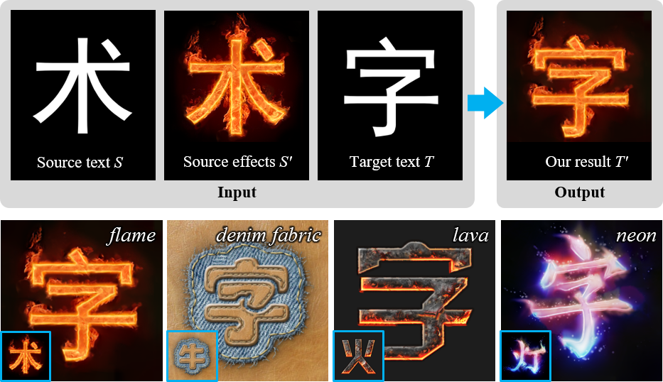
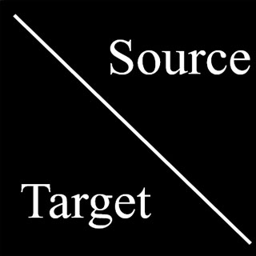
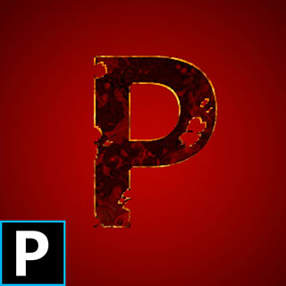
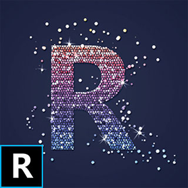
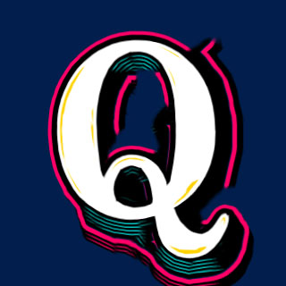
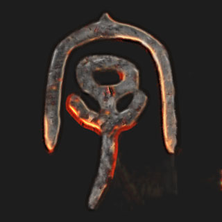
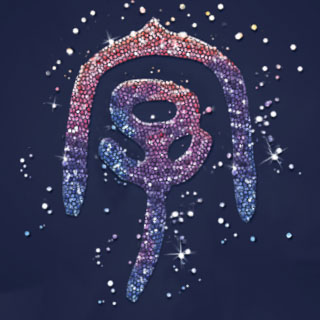

Awesome Typography:
Statistics-Based Text Effects Transfer

Figure 1. Overview: Our method takes as input the source text image S, its counterpart stylized image S' and the target text image T, then automatically generates the target stylized image T' with the special effects as in S'.
Abstract
In this work, we explore the problem of generating fantastic special-effects for the typography. It is quite challenging due to the model diversities to illustrate varied text effects for different characters. To address this issue, our key idea is to exploit the analytics on the high regularity of the spatial distribution for text effects to guide the synthesis process. Specifically, we characterize the stylized patches by their normalized positions and the optimal scales to depict their style elements. Our method first estimates these two features and derives their correlation statistically. They are then converted into soft constraints for texture transfer to accomplish adaptive multi-scale texture synthesis and to make style element distribution uniform. It allows our algorithm to produce artistic typography that fits for both local texture patterns and the global spatial distribution in the example. Experimental results demonstrate the superiority of our method for various text effects over conventional style transfer methods. In addition, we validate the effectiveness of our algorithm with extensive artistic typography library generation.
Demo
Resources
Citation
@inproceedings{Yang2017Awesome, title={Awesome Typography: Statistics-Based Text Effects Transfer}, author={Yang, Shuai and Liu, Jiaying and Lian, Zhouhui and Guo, Zongming}, booktitle={IEEE International Conference on Computer Vision and Pattern Recognition}, year={2017} }
Selected Results
 |
 |
 |
||||
 |
||||||
 |
 |
|||||
| target text | flame | lava | rust | drop | pop | blink |
Figure 2. Apply different text effects to representative characters (Chinese, alphabetic, handwriting).
Figure 3. Overview of our flame typography library. The bigger image at the top left corner serves as the example to generate the other 774 characters.